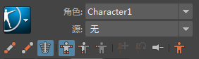
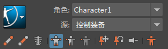
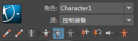

HumanIK 窗口 >  >“烘焙”(Bake)菜单中提供的选项根据选定角色（目标）、源以及操纵和设置关键帧模式更新。
>“烘焙”(Bake)菜单中提供的选项根据选定角色（目标）、源以及操纵和设置关键帧模式更新。
>“烘焙”(Bake)菜单中提供的选项根据选定角色（目标）、源以及操纵和设置关键帧模式更新。
注： 必须从 HumanIK 窗口启动 HumanIK 烘焙。不推荐选择“编辑 > 关键帧 > 烘焙模拟”(Edit > Keys > Bake Simulation)来烘焙 HumanIK 角色。
提示：
- 选择每个烘焙选项旁边的选项框
 以在烘焙前编辑烘焙模拟选项(Bake Simulation Options)。
以在烘焙前编辑烘焙模拟选项(Bake Simulation Options)。
- 如果模拟速度较慢，请在烘焙模拟选项(Bake Simulation Options)的“性能设置”(Performance Settings)区域中更改设置。
下面概述了不同目标角色类型的烘焙选项：
- 无源角色

- 烘焙骨架(Bake Skeleton)：在自身烘焙全身或身体部位骨架动画。
- 烘焙到控制绑定(Bake To Control Rig)：将全身骨架动画烘焙到控制绑定。
- 以控制绑定为源的角色（“全身”(Full Body)模式）

- 烘焙到骨架(Bake To Skeleton)：将全身控制绑定动画烘焙到骨架。
注： 烘焙到骨架后，会自动禁用角色的控制绑定。
- 烘焙控制绑定(Bake Control Rig)：在控制绑定自身烘焙全身控制绑定动画。
- 烘焙到骨架(Bake To Skeleton)：将全身控制绑定动画烘焙到骨架。
- 以控制绑定为源的角色（“身体部位”(Body Part)模式）

- 烘焙绑定身体部位(Bake Rig Body Part)：在控制绑定自身烘焙控制绑定动画，但仅适用于选定的身体部位。
- 绑定具有自定义绑定映射的角色
- 烘焙到自定义绑定(Bake To Custom Rig)：基于自定义绑定映射，将重定目标的动画从源角色烘焙到当前角色的绑定。